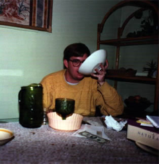
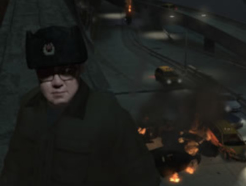
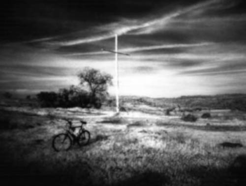
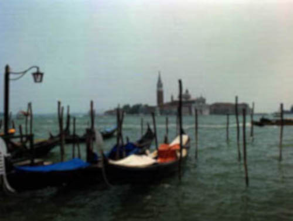

About Me - More info to be added later...
"I love online games. GTA grand theft auto is one of my favorites. After a long hard stressful day, it's great to go online and blast up folks. To many this sounds terrible, but to 99% of the people playing, it's just good laughs and harmless fun. I do also like Photoshop a lot.
This image is in Chico CA, where I'm from. There are tons of great trails to ride on there. There are lots of good places to ride here in Sacramento too. Recently, due to work and school, I haven't been out much. Well, the Corona Virus doesn't help too.
This image was taken in Venice Italy. A few years ago a group of us traveled all over Europe for about 4 months. It was great. We saw tons of stuff. I wish I could be traveling all the time. Well, not right now. Soon as the Corona virus is over. Mostly now I just travel to work sometimes, although I work mostly from home, and to the store and back. Online school, work and now even online food shopping make it pretty easy to get stuff done, but then also I forget what the outside world looks like. I actually checked online to see what the weather was outside when I could have just looked out the window.